Instrument View#
Overview#
The Instrument View shows the geometry of an instrument together with the data recorded by it.
An instrument is always shown in the context of a workspace, and each detector is coloured
according to the integrated counts in its corresponding spectrum. Detectors can be selected to
inspect their position and metadata, and to plot the spectra they recorded. Regions of the
instrument can be selected with overlay shapes and turned into masks, regions of interest or
detector groupings, and peaks from a
PeaksWorkspace can be overlaid on both the instrument
and the plot.

Note
This view replaces the previous Instrument Viewer widget, which is still available and is documented at Legacy Instrument Viewer Widget.
Opening the Instrument View#
From Workbench, right-click a workspace in the Workspaces toolbox and select
Show Instrument. The entry is only enabled for a
MatrixWorkspace that has an instrument attached.
Show Instrument (Legacy), directly below it, opens the previous widget instead.
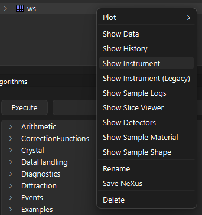
The window follows the workspace it is showing: renaming or replacing the workspace updates the view, and deleting the workspace, or clearing the Analysis Data Service, closes the window.
The Instrument View is also used inside the ALFView interface and the ISIS Reflectometry Preview
tab. Those interfaces use it unless Use legacy Instrument View in interfaces is ticked under
File -> Settings -> General.
It can also be started outside Workbench, and used from a Jupyter notebook. See Python and command line access.
Window layout#
The window is split into a control column on the left and the graphics on the right. The control
column has three tabs, Home, Settings and Component Tree. The graphics area shows the
instrument on top and a line plot of the selected spectra underneath, with the standard Mantid plot
toolbar. Both splitters can be dragged to change the proportions.
Home tab#
{kind=link}
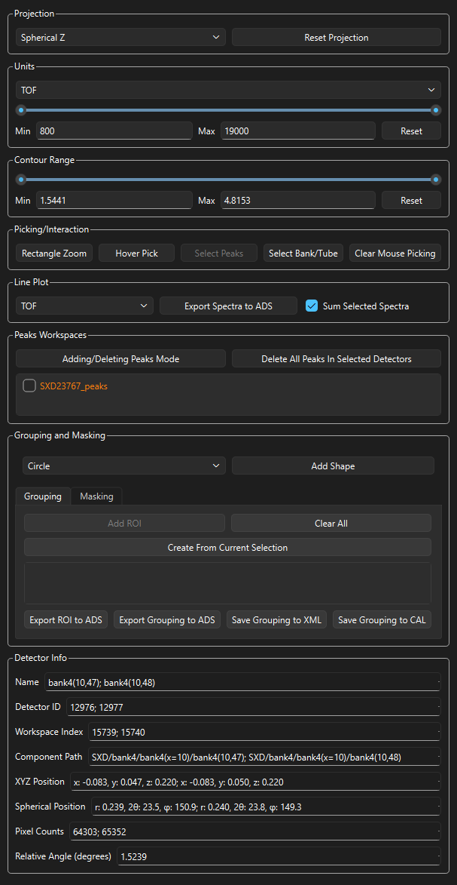
Mouse controls#
The Instrument View has no menus or keyboard shortcuts; everything is done with the mouse. What
each button does depends on the projection and on which of the Picking/Interaction buttons is
active.
Mode |
Left button |
Right button |
Wheel |
|---|---|---|---|
|
Select a detector |
Drag to rotate |
Zoom |
Flat projection |
Select a detector |
Reset the view |
Zoom about the cursor |
|
Drag to zoom; Shift, Ctrl or Alt and click to select a detector |
Reset the view |
Not used |
|
Not used |
Reset the view |
Zoom about the cursor |
Shape overlaid |
Move, resize or rotate the shape |
Reset the view |
Zoom about the cursor |
Line plot, adding peaks |
Add a peak |
Delete the nearest peak |
Not used |
Clicking a detector toggles it, so clicking a selected detector deselects it, and any number of detectors can be selected.
Projection#
The Projection combo box selects how the instrument is drawn:
3D: the instrument in three dimensions, which can be rotated freely.Spherical X,Spherical Y,Spherical Z: the detector positions projected onto a sphere about the sample and unwrapped onto the screen, using the given axis as the pole.Cylindrical X,Cylindrical Y,Cylindrical Z: an equal-area cylindrical projection about the given axis.Side by Side: each flat bank of detectors is unrolled into its own panel and the panels are laid out next to each other, so that every bank can be seen at once without foreshortening.
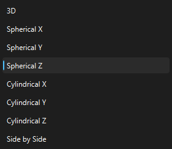
The default is taken from the instrument definition file. Reset Projection returns the
camera to its default position and zoom for the current projection.
{kind=link}
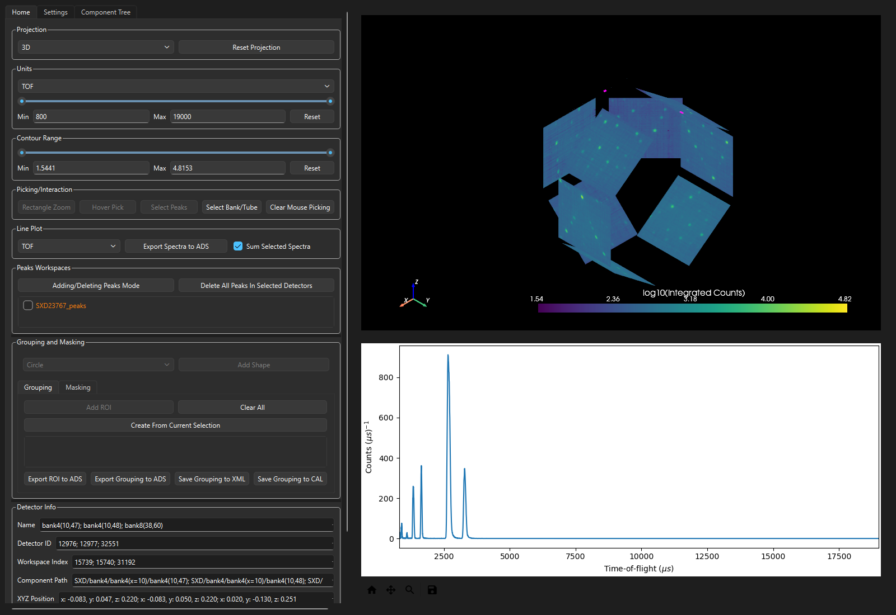
SXD in the 3D projection.#
Banks in the Side by Side view are arranged automatically, but their positions can be set
explicitly with the side-by-side-view-location tag in the
instrument definition file.
{kind=link}
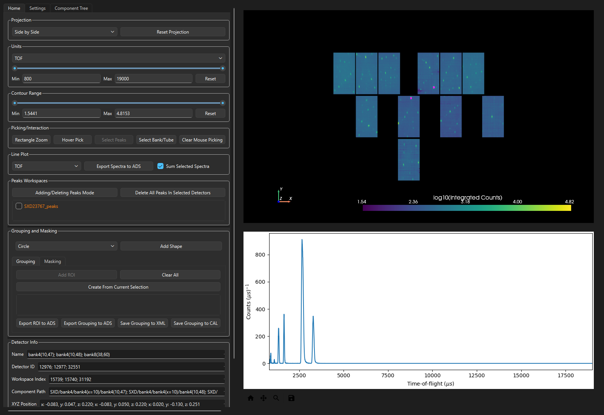
The same instrument in the Side by Side projection.#
Several controls only apply to the flat projections and are disabled in 3D:
Rectangle Zoom, Hover Pick, the shape controls, Maintain Aspect Ratio and
Flip Beam.
Units#
Selects the units and the range over which counts are integrated to colour the detectors. The
available units are TOF, dSpacing, Wavelength and MomentumTransfer. A workspace
with no X unit shows No units instead.
The range is set either by dragging the two handles of the slider or by typing into the Min and
Max boxes. Reset restores the full range of the data. The whole section is hidden for
workspaces whose data does not span a range, such as single-bin workspaces.
Contour Range#
Sets the minimum and maximum of the colour map, using the same slider and Min and Max
boxes. Narrowing the range brings out detail in weak regions of the instrument. Reset restores
the limits to the range of the integrated counts.
{kind=link}
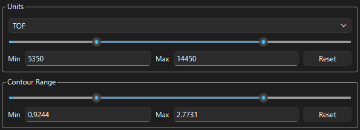
Picking/Interaction#
These buttons change what the mouse does in the instrument display. They are toggles, and selecting one may switch others off where the combination would be ambiguous.
Rectangle ZoomDrag with the left button to zoom into a rectangle. Holding Shift, Ctrl or Alt while clicking picks a detector instead, without leaving the zoom mode.
Hover PickPreview a single detector’s spectrum and information by moving the mouse over it, without clicking. The selection is not changed. Only available in the 2D projections.
Select PeaksClicking selects the nearest detector that has a peak on it, rather than the exact detector under the cursor. Only enabled while peak overlays are shown.
Select Bank/TubeClicking selects every detector in the parent component of the detector clicked, usually the whole tube or bank.
Clear Mouse PickingDeselects everything selected by clicking. Selections made from the ROI and mask lists are left alone.
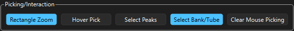
Line Plot#
Controls the plot underneath the instrument. The combo box sets the units of its x axis independently of the units used for the colour map.
Sum Selected Spectra, on by default, plots the sum of the selected spectra rather than one
curve per detector. Summing converts to d-spacing, sums, and converts back to the chosen unit, so
that detectors at different scattering angles add up correctly.
Export Spectra to ADS saves whatever is currently plotted into a workspace named
instrument_view_selected_spectra_<workspace name>.
{kind=link}
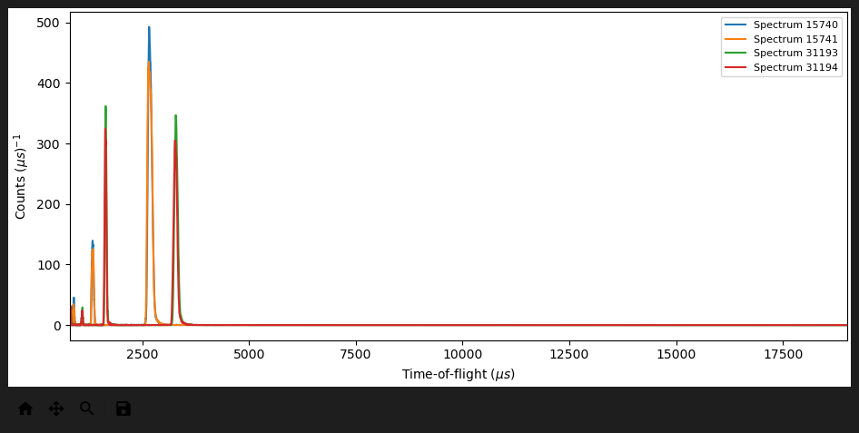
Peaks Workspaces#
Lists every PeaksWorkspace in the Analysis Data
Service that belongs to the same instrument. Peaks workspaces can also be dragged from the
Workspaces toolbox and dropped onto the list. Ticking one overlays its peaks on the instrument as
coloured markers labelled with their Miller indices, and draws them on the line plot as dashed
vertical lines. Each workspace is given its own colour, shown next to its name.
Where several peaks fall on one detector, the marker is labelled with the indices of the peak with
the largest d-spacing followed by the number of peaks, for example [1, 1, 0] x 4.
{kind=link}
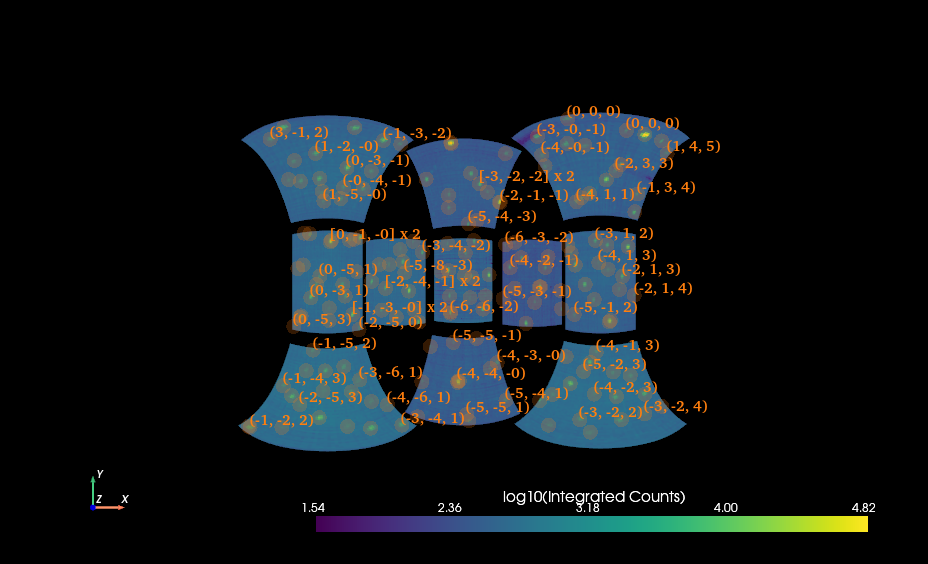
Peaks overlaid on the instrument, labelled with their Miller indices.#
{kind=link}
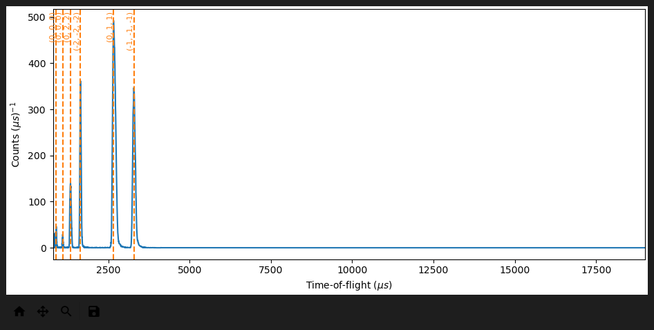
The same peaks on the line plot for the selected detectors.#
Adding/Deleting Peaks Mode allows peaks to be added and removed by clicking on the line plot:
Turn the mode on. A red vertical cursor follows the mouse across the plot.
Click a detector in the instrument display. In this mode only one detector is selected at a time.
Left-click on the plot at the position of a peak to add it, or right-click near a peak to delete the nearest one.
Peaks are added to the ticked peaks workspace if exactly one is ticked. Otherwise a workspace named
instrument_view_peaks_<workspace name> is created and used. The plot’s own zoom and pan tools
continue to work while the mode is active.
Delete All Peaks In Selected Detectors removes every peak on the currently selected detectors
from all ticked peaks workspaces.
{kind=link}
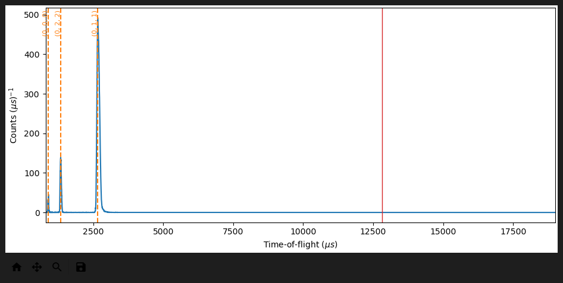
Grouping and Masking#
Regions of the instrument are selected either by overlaying a shape on a flat projection, or from
the detectors already selected in the display. To use a shape, choose one from the combo box,
Circle, Rectangle, Ellipse, Annulus or Hollow Rectangle, and press
Add Shape.
The shape can be moved by dragging from inside it and resized by dragging an edge. Rectangle,
Ellipse and Hollow Rectangle also have a rotation handle above the shape. Annulus and
Hollow Rectangle have an inner boundary that is resized independently of the outer one. The
cursor changes to show which of these is about to happen.
While a shape is on screen the line plot shows the summed spectra of the detectors it covers, and
follows the shape as it is moved, resized, rotated or as the view is zoomed. Only one shape exists
at a time. Pressing Add Shape again replaces it, and switching the button off removes it.
{kind=link}
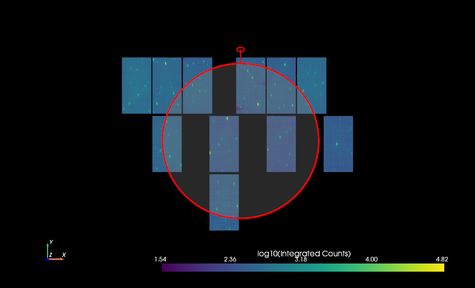
The two tabs underneath turn the covered detectors into a permanent selection:
GroupingAdd ROIadds the covered detectors to the list as a region of interest. Each entry in the list becomes one group when a grouping is exported, numbered in list order.MaskingAdd Maskadds the covered detectors to the list as a mask. Masked detectors are drawn dark grey and cannot be picked.
If Select Bank/Tube is on, the selection is expanded from the covered detectors to the whole of
each tube or bank they belong to.
Create From Current Selection, on both tabs, adds an entry from the detectors currently
selected in the display rather than from a shape. Detectors can be clicked one at a time, or a tube
or a bank at a time with Select Bank/Tube, and then committed without having to draw a shape
around them. It uses everything that is highlighted, which includes the detectors of any ticked
Grouping entry as well as those clicked directly; only the ones clicked directly are deselected
once the new entry has been added.
The button is enabled only while something is selected, and never while Hover Pick or
Adding/Deleting Peaks Mode is on, because those use the selection to show what is under the
cursor rather than to build one up.
Entries are ticked when added and can be ticked and unticked to combine them; the effect of all
ticked entries is applied together. Clear All removes the entries created in this session. Any
MaskWorkspace or GroupingWorkspace in the Analysis Data Service for the same instrument is
also listed, so existing masks and groupings can be applied here too.
{kind=link}
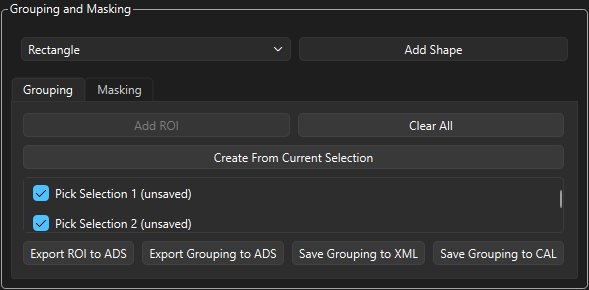
Two regions of interest on the Grouping tab.#
{kind=link}
A mask on the Masking tab. The masked detectors are drawn dark grey.#
Saving masks, regions of interest and groupings#
Button |
Result |
|---|---|
|
Creates |
|
Writes the mask to a file with SaveMask. |
|
Writes the mask to a file with SaveCalFile. |
|
Masks the detectors in the displayed workspace itself with MaskDetectors. |
|
Creates |
|
Creates |
|
Writes the grouping to a file with SaveDetectorsGrouping. |
|
Writes the grouping to a file with SaveCalFile. |
Warning
Apply Mask Permanently modifies the workspace being displayed and cannot be undone from the
Instrument View. Everything else on this page leaves the workspace unchanged.
Note
The workspace names used when exporting to the Analysis Data Service, MaskWorkspace,
MaskTable and GroupingWorkspace, are fixed, so each export overwrites the previous one.
Rename them if you need to keep more than one.
Detector Info#
Shows the details of the selected detectors. It appears when detectors are selected and is hidden again when the selection is cleared. Details are shown for up to three detectors at a time; beyond that only the plot is updated.
Field |
Meaning |
|---|---|
|
Name of the detector. |
|
Detector ID in the instrument. |
|
Index of the corresponding spectrum in the workspace. |
|
Full path of the detector through the instrument tree. |
|
Cartesian position in metres. |
|
Distance in metres, then the scattering angle and azimuthal angle in degrees. |
|
Counts integrated over the current range. |
|
Angle between the two selected detectors in reciprocal space. Shown only when exactly two detectors are selected. |
{kind=link}
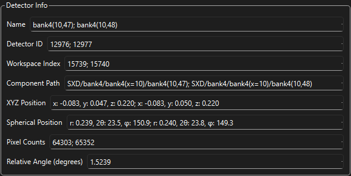
Settings tab#
{kind=link}
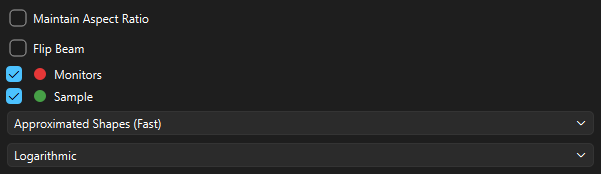
Maintain Aspect RatioDraws the detectors in a flat projection with their true aspect ratio rather than stretching them to fill the window.
Flip BeamMirrors a 2D projection about the plane perpendicular to the beam, which swaps the left and right halves of the instrument. It has no effect in
3DorSide by Side.MonitorsDraws the monitors, in the colour shown next to the checkbox.
SampleDraws the sample position, in the colour shown next to the checkbox. If the workspace has a sample shape defined, that shape is drawn instead of a single point.
- Render mode
How much detector geometry is drawn:
Points (Fastest): each detector is a single point.Approximated Shapes (Fast): detector shapes are drawn, approximated by simple quads.Raw Shapes (Slowest): the full detector geometry is drawn. This can take noticeably longer for larger instruments.
- Count scale
LinearorLogarithmiccolouring of the integrated counts. The logarithmic scale is useful when a few detectors dominate the count range.
Maintain Aspect Ratio, Flip Beam and the render mode are remembered between sessions.
Component Tree tab#
Shows the components of the instrument as they are named and arranged in the Instrument Definition File. Branches are expanded as they are opened, so even large instruments appear immediately.
Selecting one or more components restricts the display to those components. Clearing the selection restores the whole instrument.
{kind=link}
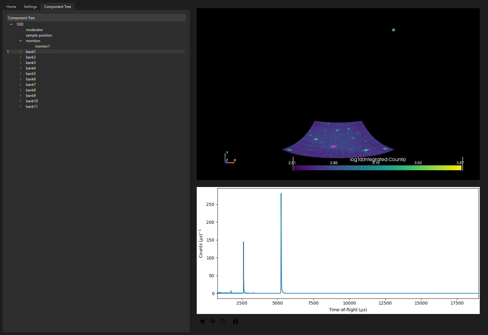
Python and command line access#
The Instrument View can be opened outside Workbench from the command line, given a file containing an instrument:
python -m instrumentview --file /path/to/file.nxs
The same thing can be done from a script, which creates its own QApplication and blocks until
the window is closed:
from instrumentview.InstrumentView import InstrumentView
InstrumentView.start_app_open_window("/path/to/file.nxs")
To show a workspace that already exists inside a running Workbench, build the window, model and presenter directly:
from instrumentview.FullInstrumentViewWindow import FullInstrumentViewWindow
from instrumentview.FullInstrumentViewModel import FullInstrumentViewModel
from instrumentview.FullInstrumentViewPresenter import FullInstrumentViewPresenter
window = FullInstrumentViewWindow()
window.show()
FullInstrumentViewPresenter(window.get_instrument_view_widget(), FullInstrumentViewModel(ws))
In a Jupyter notebook the instrument can be rendered inline instead. This is a display-only view: it draws the instrument and plots the spectra of chosen detectors, but has none of the tabs, masking, grouping or peak editing of the full window.
from instrumentview.NotebookUtils import create_notebook_window
view = create_notebook_window("/path/to/file.nxs")
view.pick_detectors([100, 101], sum_spectra=True)